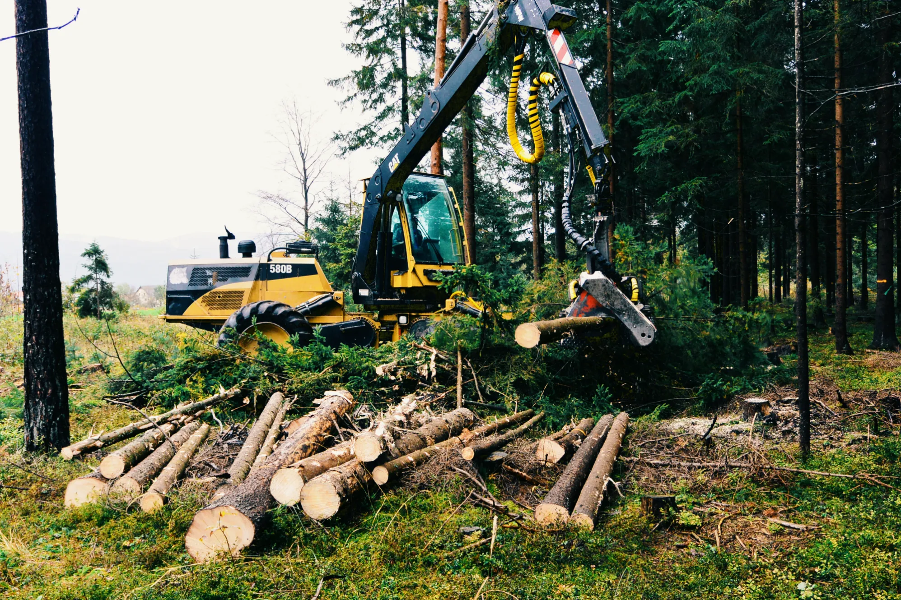
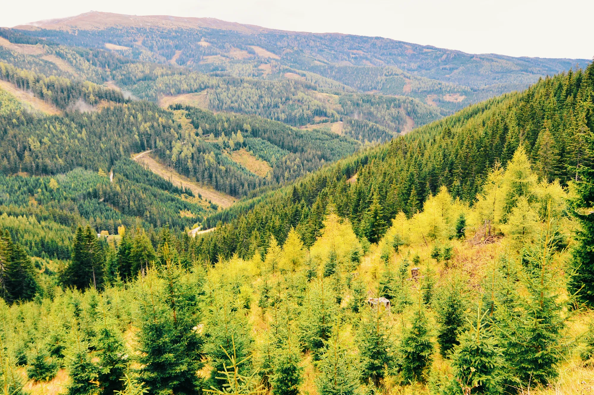
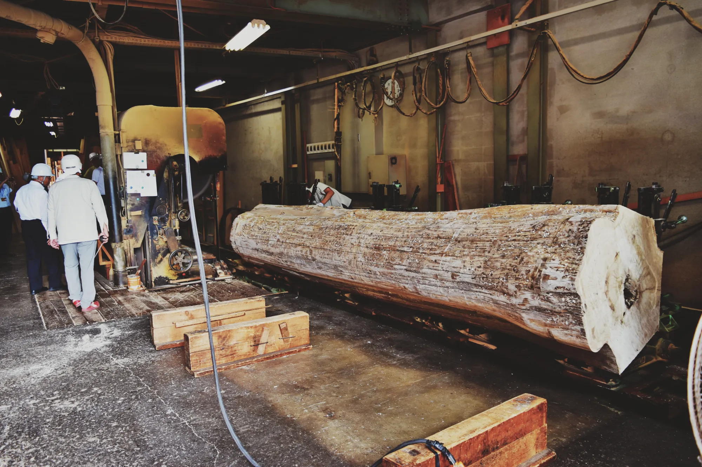
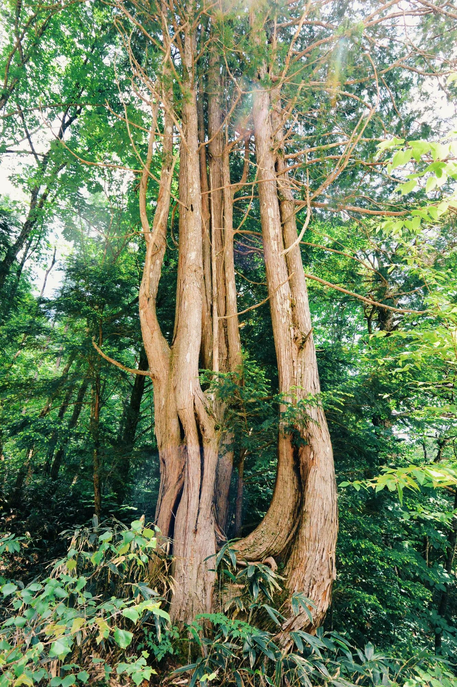
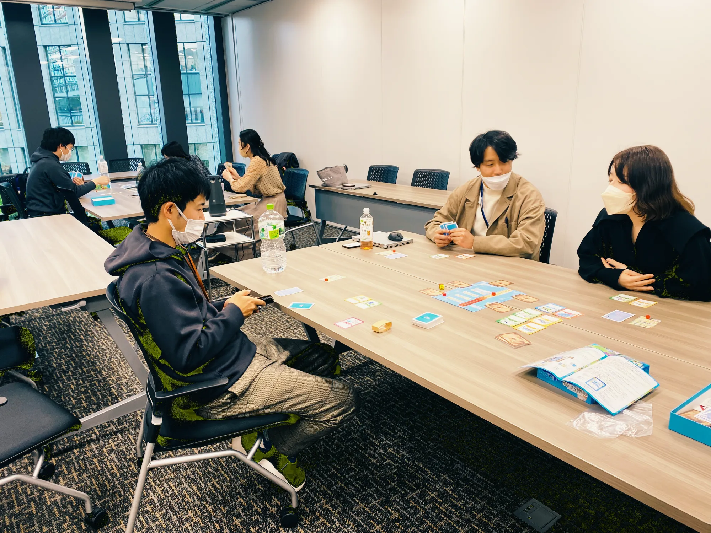
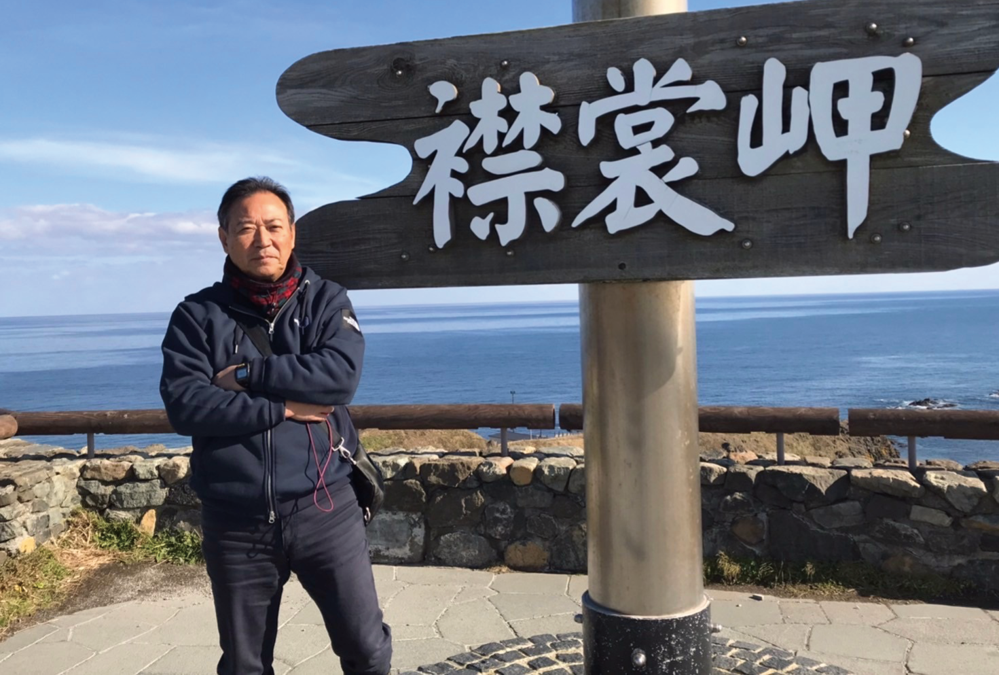

01
森林・林業部門
山づくりや森林経営全般、森林資源の利活用、森林保全に関する調査・指導・研究支援を行います。現場の状況を丁寧に読み解き、実践につながる提案・アドバイスをおこないます。
- 森林施業・経営（管理制度）コンサル
- 森林・林業・木材流通関連調査・指導
- 森林認証指導
- 森林の公益的機能に関する山づくり指導




01
山づくりや森林経営全般、森林資源の利活用、森林保全に関する調査・指導・研究支援を行います。現場の状況を丁寧に読み解き、実践につながる提案・アドバイスをおこないます。



02
書籍、教材、ボードゲーム、ワークショップ、講演などを通じて、専門知識や物語体験を社会へ届けます。
森林・環境分野から調査型ミステリーまで、分野を問わず「知る楽しさ」「考える楽しさ」を生み出すコンテンツの企画・制作・出版を行っています。
販売中のボードゲームはこちらからご覧ください。
BOOTH海外ミステリーゲームの翻訳・出版レーベル
Forgotten Tales & Enigmas


プロフィール
森林施業・経営、森林資源の利活用や環境に関する研究・教育に携わり、現場と研究をつなぐ活動に取り組んできました。

詳しい研究業績・論文等はResearchmapをご覧ください。
Research Map